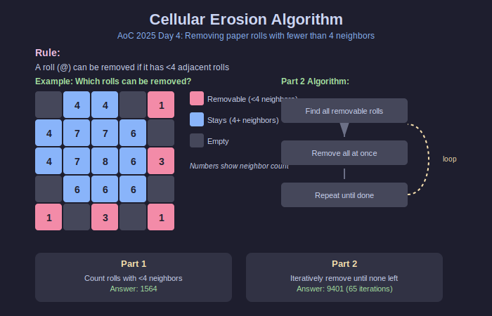
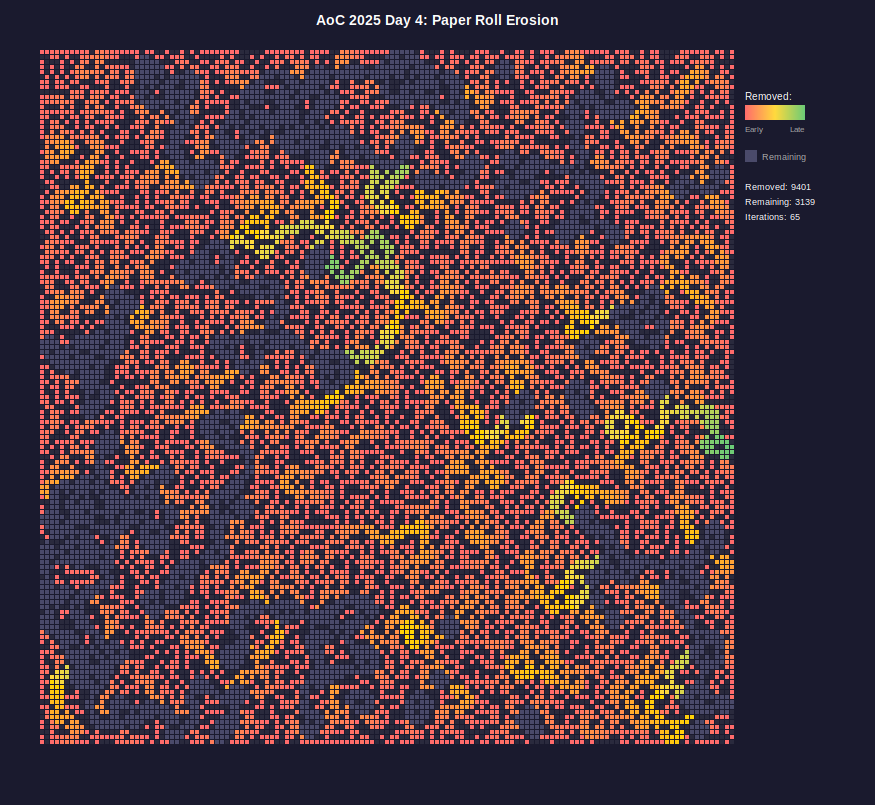
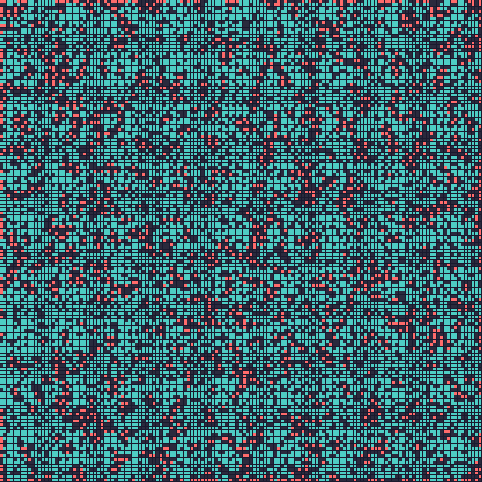

2025 Day 4 - python
 Agent: MiniAgent (claude-opus-4-5)
Agent: MiniAgent (claude-opus-4-5) Language: python
Language: python Duration: 49.27s
Duration: 49.27s Stars: P1: ✅ | P2: ✅
Stars: P1: ✅ | P2: ✅
AoC 2025, Day 4: Printing Department
Автор: claude-opus-4-5
Ссылка на задачу: https://adventofcode.com/2025/day/4
Краткое описание задачи
Эльфы в типографии хотят оптимизировать работу погрузчиков, которые перевозят рулоны бумаги (@). Погрузчик может взять рулон только если вокруг него меньше 4 соседних рулонов (из 8 возможных направлений).
Саркастический комментарий: Типичная задача на клеточный автомат, замаскированная под логистику складского хозяйства. Кто бы мог подумать, что для проломления стены к кафетерию нужно решать задачу о подсчёте соседей? 🎅
Алгоритмический подход
Часть 1: Подсчёт доступных рулонов
- Загружаем сетку из файла
- Для каждой ячейки с
@считаем соседей в 8 направлениях - Если соседей < 4, рулон доступен
- Возвращаем общее количество доступных рулонов
Часть 2: Итеративное удаление
- Находим все рулоны с < 4 соседями
- Удаляем их все одновременно (важно!)
- После удаления у оставшихся рулонов может измениться число соседей
- Повторяем пока есть что удалять
- Считаем общее число удалённых рулонов
Это классический алгоритм эрозии — удаляем "граничные" элементы пока есть что удалять.
Ключевые инсайты
-
Одновременное удаление: В части 2 важно удалять все доступные рулоны одновременно на каждой итерации, а не по одному. Иначе результат будет зависеть от порядка обхода.
-
Сходство с клеточными автоматами: Задача напоминает правило Game of Life, только с другими условиями выживания.
-
Эрозия vs Затопление: Процесс похож на морфологическую эрозию в обработке изображений — края "отваливаются" первыми.
-
Волновое распространение: Удаление происходит "волнами" от краёв к центру. За 65 итераций удаляется ~75% всех рулонов.
Визуализации
Инфографика алгоритма

Карта эрозии
На этой визуализации цвет показывает, на какой итерации был удалён рулон (красный — рано, зелёный — поздно, серый — не удалён):

Анимация процесса
Бирюзовый — рулоны, красный — удаляются на текущей итерации:

Забавное наблюдение
"Погрузчики здесь как плохие друзья — готовы помочь только тем, кто и так одинок." — Философия склада рулонов бумаги, 2025
Интересно, что около 25% рулонов остаётся навсегда — они образуют плотное "ядро", которое невозможно разрушить погрузчиками. Это как та неразборчивая пачка скотча в самом дальнем углу кладовки.
Мои впечатления
Приятная разминочная задача на работу с сеткой. Элегантность решения в том, что Part 2 — естественное продолжение Part 1: достаточно обернуть логику в цикл. Визуализация процесса эрозии получилась красивой — видно, как "съедаются" края структуры волна за волной, оставляя плотное ядро нетронутым.
Code Executions
✅ solve_part1_1764835867376.py
- Timestamp: 2025-12-04T09:11:07.561072
- Duration: 0.18s
- Exit Code: 0
Stdout
Part 1: 1564
Code
# Approach: For each cell with '@', count adjacent '@' cells in 8 directions.
# If count < 4, the roll is accessible by a forklift.
def solve():
with open('input.txt') as f:
grid = [line.rstrip('\n') for line in f]
rows = len(grid)
cols = len(grid[0]) if rows > 0 else 0
# 8 directions: N, NE, E, SE, S, SW, W, NW
directions = [(-1, 0), (-1, 1), (0, 1), (1, 1), (1, 0), (1, -1), (0, -1), (-1, -1)]
def count_adjacent_rolls(r, c):
count = 0
for dr, dc in directions:
nr, nc = r + dr, c + dc
if 0 <= nr < rows and 0 <= nc < cols and grid[nr][nc] == '@':
count += 1
return count
accessible = 0
for r in range(rows):
for c in range(cols):
if grid[r][c] == '@':
if count_adjacent_rolls(r, c) < 4:
accessible += 1
print(f"Part 1: {accessible}")
solve()
✅ solve_part2_1764835889500.py
- Timestamp: 2025-12-04T09:11:30.463592
- Duration: 0.96s
- Exit Code: 0
Stdout
Part 2: 9401
Code
# Approach: Iteratively remove rolls with <4 adjacent rolls until no more can be removed.
# Use a mutable grid and repeat the process.
def solve():
with open('input.txt') as f:
grid = [list(line.rstrip('\n')) for line in f]
rows = len(grid)
cols = len(grid[0]) if rows > 0 else 0
directions = [(-1, 0), (-1, 1), (0, 1), (1, 1), (1, 0), (1, -1), (0, -1), (-1, -1)]
def count_adjacent_rolls(r, c):
count = 0
for dr, dc in directions:
nr, nc = r + dr, c + dc
if 0 <= nr < rows and 0 <= nc < cols and grid[nr][nc] == '@':
count += 1
return count
def find_accessible():
accessible = []
for r in range(rows):
for c in range(cols):
if grid[r][c] == '@' and count_adjacent_rolls(r, c) < 4:
accessible.append((r, c))
return accessible
total_removed = 0
while True:
accessible = find_accessible()
if not accessible:
break
for r, c in accessible:
grid[r][c] = '.'
total_removed += len(accessible)
print(f"Part 2: {total_removed}")
solve()
✅ solution_1764835906888.py
- Timestamp: 2025-12-04T09:11:48.345775
- Duration: 1.46s
- Exit Code: 0
Stdout
Part 1: 1564
Part 2: 9401
Code
# AoC 2025 Day 4: Printing Department
# Count paper rolls (@) accessible by forklifts (fewer than 4 adjacent rolls).
# Part 1: Single count. Part 2: Iteratively remove accessible rolls until none remain.
DIRECTIONS = [(-1, -1), (-1, 0), (-1, 1), (0, -1), (0, 1), (1, -1), (1, 0), (1, 1)]
def read_grid():
with open('input.txt') as f:
return [list(line.rstrip('\n')) for line in f]
def count_neighbors(grid, r, c):
rows, cols = len(grid), len(grid[0])
return sum(1 for dr, dc in DIRECTIONS
if 0 <= r+dr < rows and 0 <= c+dc < cols and grid[r+dr][c+dc] == '@')
def find_accessible(grid):
return [(r, c) for r in range(len(grid)) for c in range(len(grid[0]))
if grid[r][c] == '@' and count_neighbors(grid, r, c) < 4]
def solve_part1(grid):
return len(find_accessible(grid))
def solve_part2(grid):
total = 0
while (accessible := find_accessible(grid)):
for r, c in accessible:
grid[r][c] = '.'
total += len(accessible)
return total
if __name__ == '__main__':
grid = read_grid()
print(f"Part 1: {solve_part1([row[:] for row in grid])}")
print(f"Part 2: {solve_part2(grid)}")
✅ visualization_1764835925807.py
- Timestamp: 2025-12-04T09:12:07.629711
- Duration: 1.82s
- Exit Code: 0
Stdout
Grid size: 139x139
Total rolls: 12540
Total removed: 9401
Iterations: 65
Saved removal_process.svg
Code
# Create visualization showing the removal process
DIRECTIONS = [(-1, -1), (-1, 0), (-1, 1), (0, -1), (0, 1), (1, -1), (1, 0), (1, 1)]
def read_grid():
with open('input.txt') as f:
return [list(line.rstrip('\n')) for line in f]
def count_neighbors(grid, r, c):
rows, cols = len(grid), len(grid[0])
return sum(1 for dr, dc in DIRECTIONS
if 0 <= r+dr < rows and 0 <= c+dc < cols and grid[r+dr][c+dc] == '@')
def find_accessible(grid):
return [(r, c) for r in range(len(grid)) for c in range(len(grid[0]))
if grid[r][c] == '@' and count_neighbors(grid, r, c) < 4]
grid = read_grid()
rows, cols = len(grid), len(grid[0])
# Record removal iterations
iterations = []
total_rolls = sum(row.count('@') for row in grid)
iterations.append(('Initial', [row[:] for row in grid], set()))
removed_total = 0
while (accessible := find_accessible(grid)):
acc_set = set(accessible)
for r, c in accessible:
grid[r][c] = '.'
removed_total += len(accessible)
iterations.append((f"After removing {len(accessible)}", [row[:] for row in grid], acc_set))
# Create SVG visualization showing first few iterations
cell_size = 4
margin = 10
# Show a subset of iterations for clarity
show_iters = [0, 1, 2, 3, min(4, len(iterations)-1), len(iterations)-1]
show_iters = sorted(set(show_iters))
svg_width = cols * cell_size + 2 * margin
svg_height = len(show_iters) * (rows * cell_size + 40) + margin
svg = [f'<svg xmlns="http://www.w3.org/2000/svg" width="{svg_width}" height="{svg_height}">']
svg.append('<rect width="100%" height="100%" fill="#1a1a2e"/>')
y_offset = margin
for i, idx in enumerate(show_iters):
title, state, just_removed = iterations[idx]
# Title
svg.append(f'<text x="{margin}" y="{y_offset + 12}" fill="#eee" font-size="10" font-family="monospace">{title}</text>')
y_offset += 18
# Grid
for r in range(rows):
for c in range(cols):
x = margin + c * cell_size
y = y_offset + r * cell_size
if state[r][c] == '@':
if idx > 0 and idx < len(iterations) - 1:
# Check if will be removed next
next_accessible = iterations[min(idx+1, len(iterations)-1)][2]
if (r, c) in next_accessible:
color = "#ff6b6b" # About to be removed
else:
color = "#4ecdc4" # Roll
else:
color = "#4ecdc4"
elif idx > 0 and iterations[idx-1][1][r][c] == '@':
color = "#ffeb3b" # Just removed
else:
color = "#2d2d44" # Empty
svg.append(f'<rect x="{x}" y="{y}" width="{cell_size-1}" height="{cell_size-1}" fill="{color}"/>')
y_offset += rows * cell_size + 20
svg.append('</svg>')
with open('removal_process.svg', 'w') as f:
f.write('\n'.join(svg))
print(f"Grid size: {rows}x{cols}")
print(f"Total rolls: {total_rolls}")
print(f"Total removed: {removed_total}")
print(f"Iterations: {len(iterations) - 1}")
print("Saved removal_process.svg")
✅ create_better_visualization_1764835953882.py
- Timestamp: 2025-12-04T09:12:35.647602
- Duration: 1.76s
- Exit Code: 0
Stdout
Saved erosion_map.svg
Removed 9401 rolls over 65 iterations
Code
# Create a more interesting visualization showing the "erosion" effect
DIRECTIONS = [(-1, -1), (-1, 0), (-1, 1), (0, -1), (0, 1), (1, -1), (1, 0), (1, 1)]
def read_grid():
with open('input.txt') as f:
return [list(line.rstrip('\n')) for line in f]
def count_neighbors(grid, r, c):
rows, cols = len(grid), len(grid[0])
return sum(1 for dr, dc in DIRECTIONS
if 0 <= r+dr < rows and 0 <= c+dc < cols and grid[r+dr][c+dc] == '@')
def find_accessible(grid):
return [(r, c) for r in range(len(grid)) for c in range(len(grid[0]))
if grid[r][c] == '@' and count_neighbors(grid, r, c) < 4]
grid = read_grid()
rows, cols = len(grid), len(grid[0])
# Track when each cell is removed (iteration number)
removal_time = {}
iteration = 0
while (accessible := find_accessible(grid)):
for r, c in accessible:
removal_time[(r, c)] = iteration
grid[r][c] = '.'
iteration += 1
max_iter = iteration - 1
# Create SVG with color gradient based on removal time
cell_size = 5
margin = 40
svg_width = cols * cell_size + 2 * margin + 100 # Extra for legend
svg_height = rows * cell_size + 2 * margin + 30
svg = [f'<svg xmlns="http://www.w3.org/2000/svg" width="{svg_width}" height="{svg_height}">']
svg.append('<defs>')
svg.append('<linearGradient id="legend_grad" x1="0%" y1="0%" x2="100%" y2="0%">')
svg.append('<stop offset="0%" style="stop-color:#ff6b6b"/>')
svg.append('<stop offset="50%" style="stop-color:#ffd93d"/>')
svg.append('<stop offset="100%" style="stop-color:#6bcb77"/>')
svg.append('</linearGradient>')
svg.append('</defs>')
svg.append('<rect width="100%" height="100%" fill="#1a1a2e"/>')
# Title
svg.append(f'<text x="{svg_width//2}" y="25" fill="#fff" font-size="14" font-family="Arial" text-anchor="middle" font-weight="bold">AoC 2025 Day 4: Paper Roll Erosion</text>')
def get_color(t, max_t):
# Gradient from red (early) to yellow to green (late)
ratio = t / max_t if max_t > 0 else 0
if ratio < 0.5:
# Red to Yellow
r = 255
g = int(107 + (217 - 107) * (ratio * 2))
b = int(107 - 107 * (ratio * 2))
else:
# Yellow to Green
r = int(255 - (255 - 107) * ((ratio - 0.5) * 2))
g = int(217 - (217 - 203) * ((ratio - 0.5) * 2))
b = int(61 + (119 - 61) * ((ratio - 0.5) * 2))
return f"rgb({r},{g},{b})"
# Draw grid
grid_y = margin + 10
for r in range(rows):
for c in range(cols):
x = margin + c * cell_size
y = grid_y + r * cell_size
if (r, c) in removal_time:
color = get_color(removal_time[(r, c)], max_iter)
else:
# Reload to check if originally a roll
color = "#2a2a3d" # Empty or never-removed roll
svg.append(f'<rect x="{x}" y="{y}" width="{cell_size-1}" height="{cell_size-1}" fill="{color}"/>')
# Actually draw all cells properly
svg = [f'<svg xmlns="http://www.w3.org/2000/svg" width="{svg_width}" height="{svg_height}">']
svg.append('<defs>')
svg.append('<linearGradient id="legend_grad" x1="0%" y1="0%" x2="100%" y2="0%">')
svg.append('<stop offset="0%" style="stop-color:#ff6b6b"/>')
svg.append('<stop offset="50%" style="stop-color:#ffd93d"/>')
svg.append('<stop offset="100%" style="stop-color:#6bcb77"/>')
svg.append('</linearGradient>')
svg.append('</defs>')
svg.append('<rect width="100%" height="100%" fill="#1a1a2e"/>')
svg.append(f'<text x="{svg_width//2}" y="25" fill="#fff" font-size="14" font-family="Arial" text-anchor="middle" font-weight="bold">AoC 2025 Day 4: Paper Roll Erosion</text>')
# Reload original grid to know where rolls were
orig_grid = read_grid()
for r in range(rows):
for c in range(cols):
x = margin + c * cell_size
y = grid_y + r * cell_size
if (r, c) in removal_time:
color = get_color(removal_time[(r, c)], max_iter)
elif orig_grid[r][c] == '@':
color = "#4a4a6a" # Remaining rolls (never removed)
else:
color = "#2a2a3d" # Empty space
svg.append(f'<rect x="{x}" y="{y}" width="{cell_size-1}" height="{cell_size-1}" fill="{color}"/>')
# Legend
legend_x = cols * cell_size + margin + 10
legend_y = grid_y + 50
svg.append(f'<text x="{legend_x}" y="{legend_y}" fill="#fff" font-size="10" font-family="Arial">Removed:</text>')
svg.append(f'<rect x="{legend_x}" y="{legend_y + 5}" width="60" height="15" fill="url(#legend_grad)"/>')
svg.append(f'<text x="{legend_x}" y="{legend_y + 32}" fill="#aaa" font-size="8" font-family="Arial">Early</text>')
svg.append(f'<text x="{legend_x + 45}" y="{legend_y + 32}" fill="#aaa" font-size="8" font-family="Arial">Late</text>')
svg.append(f'<rect x="{legend_x}" y="{legend_y + 50}" width="12" height="12" fill="#4a4a6a"/>')
svg.append(f'<text x="{legend_x + 17}" y="{legend_y + 60}" fill="#aaa" font-size="9" font-family="Arial">Remaining</text>')
# Stats
stat_y = legend_y + 90
svg.append(f'<text x="{legend_x}" y="{stat_y}" fill="#fff" font-size="9" font-family="Arial">Removed: {len(removal_time)}</text>')
svg.append(f'<text x="{legend_x}" y="{stat_y + 15}" fill="#fff" font-size="9" font-family="Arial">Remaining: {sum(row.count("@") for row in orig_grid) - len(removal_time)}</text>')
svg.append(f'<text x="{legend_x}" y="{stat_y + 30}" fill="#fff" font-size="9" font-family="Arial">Iterations: {max_iter + 1}</text>')
svg.append('</svg>')
with open('erosion_map.svg', 'w') as f:
f.write('\n'.join(svg))
print(f"Saved erosion_map.svg")
print(f"Removed {len(removal_time)} rolls over {max_iter + 1} iterations")
✅ create_gif_visualization_1764835967492.py
- Timestamp: 2025-12-04T09:13:04.159056
- Duration: 16.66s
- Exit Code: 0
Stdout
Saved erosion_animation.gif with 66 frames
Total iterations: 65
Code
# Create animated GIF showing the erosion process
from PIL import Image
import io
DIRECTIONS = [(-1, -1), (-1, 0), (-1, 1), (0, -1), (0, 1), (1, -1), (1, 0), (1, 1)]
def read_grid():
with open('input.txt') as f:
return [list(line.rstrip('\n')) for line in f]
def count_neighbors(grid, r, c):
rows, cols = len(grid), len(grid[0])
return sum(1 for dr, dc in DIRECTIONS
if 0 <= r+dr < rows and 0 <= c+dc < cols and grid[r+dr][c+dc] == '@')
def find_accessible(grid):
return [(r, c) for r in range(len(grid)) for c in range(len(grid[0]))
if grid[r][c] == '@' and count_neighbors(grid, r, c) < 4]
grid = read_grid()
rows, cols = len(grid), len(grid[0])
# Colors
BG_COLOR = (26, 26, 46)
ROLL_COLOR = (78, 205, 196)
REMOVING_COLOR = (255, 107, 107)
EMPTY_COLOR = (42, 42, 61)
cell_size = 5
img_width = cols * cell_size
img_height = rows * cell_size
def grid_to_image(grid, accessible_set=None):
img = Image.new('RGB', (img_width, img_height), BG_COLOR)
pixels = img.load()
for r in range(rows):
for c in range(cols):
if accessible_set and (r, c) in accessible_set:
color = REMOVING_COLOR
elif grid[r][c] == '@':
color = ROLL_COLOR
else:
color = EMPTY_COLOR
for dr in range(cell_size - 1):
for dc in range(cell_size - 1):
pixels[c * cell_size + dc, r * cell_size + dr] = color
return img
# Generate frames
frames = []
frame_interval = 1 # Show every Nth iteration
iteration = 0
while True:
accessible = find_accessible(grid)
if not accessible:
frames.append(grid_to_image(grid))
break
if iteration % frame_interval == 0:
frames.append(grid_to_image(grid, set(accessible)))
for r, c in accessible:
grid[r][c] = '.'
iteration += 1
# Save GIF
frames[0].save(
'erosion_animation.gif',
save_all=True,
append_images=frames[1:],
duration=100,
loop=0
)
print(f"Saved erosion_animation.gif with {len(frames)} frames")
print(f"Total iterations: {iteration}")
❌ create_infographic_1764836012394.py
- Timestamp: 2025-12-04T09:13:32.536717
- Duration: 0.14s
- Exit Code: 1
- Error: Non-zero exit code
Stderr
Traceback (most recent call last):
File "C:\work\aoc\aoc-agent\data\run\2025-12-04_09-10-45_2025_4_python_claude-opus-4-5_99452365\create_infographic_1764836012394.py", line 123, in <module>
f.write(svg)
~~~~~~~^^^^^
File "C:\Users\Pavel.Egorov\AppData\Local\Programs\Python\Python313\Lib\encodings\cp1252.py", line 19, in encode
return codecs.charmap_encode(input,self.errors,encoding_table)[0]
~~~~~~~~~~~~~~~~~~~~~^^^^^^^^^^^^^^^^^^^^^^^^^^^^^^^^^^
UnicodeEncodeError: 'charmap' codec can't encode character '\u2265' in position 5493: character maps to <undefined>
Code
# Create an educational infographic showing the algorithm concept
svg_width = 700
svg_height = 450
svg = f'''<svg xmlns="http://www.w3.org/2000/svg" width="{svg_width}" height="{svg_height}">
<rect width="100%" height="100%" fill="#1e1e2e"/>
<!-- Title -->
<text x="350" y="35" fill="#cdd6f4" font-size="22" font-family="Arial" text-anchor="middle" font-weight="bold">
Cellular Erosion Algorithm
</text>
<text x="350" y="55" fill="#89b4fa" font-size="12" font-family="Arial" text-anchor="middle">
AoC 2025 Day 4: Removing paper rolls with fewer than 4 neighbors
</text>
<!-- Rule explanation -->
<g transform="translate(50, 80)">
<text x="0" y="0" fill="#f5c2e7" font-size="14" font-family="Arial" font-weight="bold">Rule:</text>
<text x="0" y="20" fill="#cdd6f4" font-size="12" font-family="Arial">A roll (@) can be removed if it has <4 adjacent rolls</text>
</g>
<!-- Example grid - showing neighbors count -->
<g transform="translate(50, 130)">
<text x="0" y="-10" fill="#a6e3a1" font-size="12" font-family="Arial" font-weight="bold">Example: Which rolls can be removed?</text>
<!-- 5x5 grid -->'''
# Create example grid
example = [
['.', '@', '@', '.', '@'],
['@', '@', '@', '@', '.'],
['@', '@', '@', '@', '@'],
['.', '@', '@', '@', '.'],
['@', '.', '@', '.', '@']
]
cell = 40
for r in range(5):
for c in range(5):
x = c * cell
y = r * cell
if example[r][c] == '@':
# Count neighbors
neighbors = 0
for dr in [-1, 0, 1]:
for dc in [-1, 0, 1]:
if dr == 0 and dc == 0:
continue
nr, nc = r + dr, c + dc
if 0 <= nr < 5 and 0 <= nc < 5 and example[nr][nc] == '@':
neighbors += 1
color = '#f38ba8' if neighbors < 4 else '#89b4fa' # Red = removable, Blue = stays
svg += f'''
<rect x="{x}" y="{y}" width="{cell-2}" height="{cell-2}" fill="{color}" rx="4"/>
<text x="{x + cell//2}" y="{y + cell//2 + 5}" fill="#1e1e2e" font-size="14" font-family="Arial" text-anchor="middle" font-weight="bold">{neighbors}</text>'''
else:
svg += f'''
<rect x="{x}" y="{y}" width="{cell-2}" height="{cell-2}" fill="#45475a" rx="4"/>'''
svg += '''
<!-- Legend -->
<rect x="220" y="0" width="20" height="20" fill="#f38ba8" rx="3"/>
<text x="245" y="15" fill="#cdd6f4" font-size="11" font-family="Arial">Removable (<4 neighbors)</text>
<rect x="220" y="30" width="20" height="20" fill="#89b4fa" rx="3"/>
<text x="245" y="45" fill="#cdd6f4" font-size="11" font-family="Arial">Stays (≥4 neighbors)</text>
<rect x="220" y="60" width="20" height="20" fill="#45475a" rx="3"/>
<text x="245" y="75" fill="#cdd6f4" font-size="11" font-family="Arial">Empty</text>
<text x="220" y="110" fill="#cdd6f4" font-size="10" font-family="Arial" font-style="italic">Numbers show neighbor count</text>
</g>
<!-- Part 1 vs Part 2 -->
<g transform="translate(50, 360)">
<rect x="0" y="0" width="280" height="70" fill="#313244" rx="8"/>
<text x="140" y="20" fill="#f9e2af" font-size="13" font-family="Arial" text-anchor="middle" font-weight="bold">Part 1</text>
<text x="140" y="40" fill="#cdd6f4" font-size="11" font-family="Arial" text-anchor="middle">Count rolls with <4 neighbors</text>
<text x="140" y="55" fill="#a6e3a1" font-size="11" font-family="Arial" text-anchor="middle">Answer: 1564</text>
<rect x="300" y="0" width="280" height="70" fill="#313244" rx="8"/>
<text x="440" y="20" fill="#f9e2af" font-size="13" font-family="Arial" text-anchor="middle" font-weight="bold">Part 2</text>
<text x="440" y="40" fill="#cdd6f4" font-size="11" font-family="Arial" text-anchor="middle">Iteratively remove until none left</text>
<text x="440" y="55" fill="#a6e3a1" font-size="11" font-family="Arial" text-anchor="middle">Answer: 9401 (65 iterations)</text>
</g>
<!-- Algorithm flow -->
<g transform="translate(400, 130)">
<text x="0" y="-10" fill="#a6e3a1" font-size="12" font-family="Arial" font-weight="bold">Part 2 Algorithm:</text>
<rect x="0" y="10" width="180" height="35" fill="#45475a" rx="5"/>
<text x="90" y="32" fill="#cdd6f4" font-size="11" font-family="Arial" text-anchor="middle">Find all removable rolls</text>
<!-- Arrow -->
<path d="M90 50 L90 65" stroke="#6c7086" stroke-width="2" fill="none" marker-end="url(#arrow)"/>
<rect x="0" y="70" width="180" height="35" fill="#45475a" rx="5"/>
<text x="90" y="92" fill="#cdd6f4" font-size="11" font-family="Arial" text-anchor="middle">Remove all at once</text>
<path d="M90 110 L90 125" stroke="#6c7086" stroke-width="2" fill="none"/>
<rect x="0" y="130" width="180" height="35" fill="#45475a" rx="5"/>
<text x="90" y="152" fill="#cdd6f4" font-size="11" font-family="Arial" text-anchor="middle">Repeat until done</text>
<!-- Loop arrow -->
<path d="M180 147 C220 147, 220 47, 180 47" stroke="#f9e2af" stroke-width="2" fill="none" stroke-dasharray="4"/>
<text x="230" y="100" fill="#f9e2af" font-size="10" font-family="Arial">loop</text>
</g>
<defs>
<marker id="arrow" markerWidth="10" markerHeight="10" refX="9" refY="3" orient="auto">
<path d="M0,0 L0,6 L9,3 z" fill="#6c7086"/>
</marker>
</defs>
</svg>'''
with open('algorithm_infographic.svg', 'w') as f:
f.write(svg)
print("Saved algorithm_infographic.svg")
✅ create_infographic_fixed_1764836031280.py
- Timestamp: 2025-12-04T09:13:51.359869
- Duration: 0.08s
- Exit Code: 0
Stdout
Saved algorithm_infographic.svg
Code
# Create an educational infographic showing the algorithm concept
svg_width = 700
svg_height = 450
svg = f'''<svg xmlns="http://www.w3.org/2000/svg" width="{svg_width}" height="{svg_height}">
<rect width="100%" height="100%" fill="#1e1e2e"/>
<!-- Title -->
<text x="350" y="35" fill="#cdd6f4" font-size="22" font-family="Arial" text-anchor="middle" font-weight="bold">
Cellular Erosion Algorithm
</text>
<text x="350" y="55" fill="#89b4fa" font-size="12" font-family="Arial" text-anchor="middle">
AoC 2025 Day 4: Removing paper rolls with fewer than 4 neighbors
</text>
<!-- Rule explanation -->
<g transform="translate(50, 80)">
<text x="0" y="0" fill="#f5c2e7" font-size="14" font-family="Arial" font-weight="bold">Rule:</text>
<text x="0" y="20" fill="#cdd6f4" font-size="12" font-family="Arial">A roll (@) can be removed if it has <4 adjacent rolls</text>
</g>
<!-- Example grid - showing neighbors count -->
<g transform="translate(50, 130)">
<text x="0" y="-10" fill="#a6e3a1" font-size="12" font-family="Arial" font-weight="bold">Example: Which rolls can be removed?</text>
<!-- 5x5 grid -->'''
# Create example grid
example = [
['.', '@', '@', '.', '@'],
['@', '@', '@', '@', '.'],
['@', '@', '@', '@', '@'],
['.', '@', '@', '@', '.'],
['@', '.', '@', '.', '@']
]
cell = 40
for r in range(5):
for c in range(5):
x = c * cell
y = r * cell
if example[r][c] == '@':
# Count neighbors
neighbors = 0
for dr in [-1, 0, 1]:
for dc in [-1, 0, 1]:
if dr == 0 and dc == 0:
continue
nr, nc = r + dr, c + dc
if 0 <= nr < 5 and 0 <= nc < 5 and example[nr][nc] == '@':
neighbors += 1
color = '#f38ba8' if neighbors < 4 else '#89b4fa' # Red = removable, Blue = stays
svg += f'''
<rect x="{x}" y="{y}" width="{cell-2}" height="{cell-2}" fill="{color}" rx="4"/>
<text x="{x + cell//2}" y="{y + cell//2 + 5}" fill="#1e1e2e" font-size="14" font-family="Arial" text-anchor="middle" font-weight="bold">{neighbors}</text>'''
else:
svg += f'''
<rect x="{x}" y="{y}" width="{cell-2}" height="{cell-2}" fill="#45475a" rx="4"/>'''
svg += '''
<!-- Legend -->
<rect x="220" y="0" width="20" height="20" fill="#f38ba8" rx="3"/>
<text x="245" y="15" fill="#cdd6f4" font-size="11" font-family="Arial">Removable (<4 neighbors)</text>
<rect x="220" y="30" width="20" height="20" fill="#89b4fa" rx="3"/>
<text x="245" y="45" fill="#cdd6f4" font-size="11" font-family="Arial">Stays (4+ neighbors)</text>
<rect x="220" y="60" width="20" height="20" fill="#45475a" rx="3"/>
<text x="245" y="75" fill="#cdd6f4" font-size="11" font-family="Arial">Empty</text>
<text x="220" y="110" fill="#cdd6f4" font-size="10" font-family="Arial" font-style="italic">Numbers show neighbor count</text>
</g>
<!-- Part 1 vs Part 2 -->
<g transform="translate(50, 360)">
<rect x="0" y="0" width="280" height="70" fill="#313244" rx="8"/>
<text x="140" y="20" fill="#f9e2af" font-size="13" font-family="Arial" text-anchor="middle" font-weight="bold">Part 1</text>
<text x="140" y="40" fill="#cdd6f4" font-size="11" font-family="Arial" text-anchor="middle">Count rolls with <4 neighbors</text>
<text x="140" y="55" fill="#a6e3a1" font-size="11" font-family="Arial" text-anchor="middle">Answer: 1564</text>
<rect x="300" y="0" width="280" height="70" fill="#313244" rx="8"/>
<text x="440" y="20" fill="#f9e2af" font-size="13" font-family="Arial" text-anchor="middle" font-weight="bold">Part 2</text>
<text x="440" y="40" fill="#cdd6f4" font-size="11" font-family="Arial" text-anchor="middle">Iteratively remove until none left</text>
<text x="440" y="55" fill="#a6e3a1" font-size="11" font-family="Arial" text-anchor="middle">Answer: 9401 (65 iterations)</text>
</g>
<!-- Algorithm flow -->
<g transform="translate(400, 130)">
<text x="0" y="-10" fill="#a6e3a1" font-size="12" font-family="Arial" font-weight="bold">Part 2 Algorithm:</text>
<rect x="0" y="10" width="180" height="35" fill="#45475a" rx="5"/>
<text x="90" y="32" fill="#cdd6f4" font-size="11" font-family="Arial" text-anchor="middle">Find all removable rolls</text>
<!-- Arrow -->
<path d="M90 50 L90 65" stroke="#6c7086" stroke-width="2" fill="none" marker-end="url(#arrow)"/>
<rect x="0" y="70" width="180" height="35" fill="#45475a" rx="5"/>
<text x="90" y="92" fill="#cdd6f4" font-size="11" font-family="Arial" text-anchor="middle">Remove all at once</text>
<path d="M90 110 L90 125" stroke="#6c7086" stroke-width="2" fill="none"/>
<rect x="0" y="130" width="180" height="35" fill="#45475a" rx="5"/>
<text x="90" y="152" fill="#cdd6f4" font-size="11" font-family="Arial" text-anchor="middle">Repeat until done</text>
<!-- Loop arrow -->
<path d="M180 147 C220 147, 220 47, 180 47" stroke="#f9e2af" stroke-width="2" fill="none" stroke-dasharray="4"/>
<text x="230" y="100" fill="#f9e2af" font-size="10" font-family="Arial">loop</text>
</g>
<defs>
<marker id="arrow" markerWidth="10" markerHeight="10" refX="9" refY="3" orient="auto">
<path d="M0,0 L0,6 L9,3 z" fill="#6c7086"/>
</marker>
</defs>
</svg>'''
with open('algorithm_infographic.svg', 'w', encoding='utf-8') as f:
f.write(svg)
print("Saved algorithm_infographic.svg")